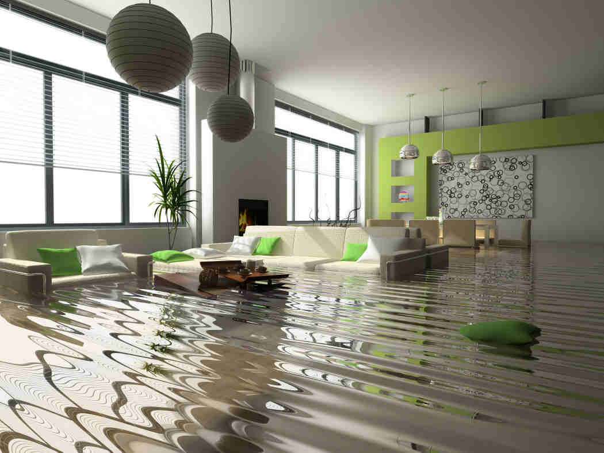

Condominium Water Losses Require Expert Mitigation, Then Detailed Liability Investigations, Determinations
If you live in a condominium, there is a reasonable chance that, at some point, you will experience one of the most frustrating events for homeowners: water intrusion caused by plumbing problems and related losses. The big difference between those who reside in a shared community, such as a condominium building, and those who reside in a single-family home is the added complication for condominium dwellers of determining responsibility and liability for any water damage and resulting remediation work.
In condominiums, the association is generally responsible for losses emanating from the property’s common elements. Complications for assigning responsibility, however, typically arise from losses that may originate from inside an owner’s dwelling unit, and may cause damage to adjacent or below units, as well as to the common elements.
{kind=link}
Such cases are often resolved through a negotiation between insurance carriers for unit owners and those for the association’s property, assuming the owners have adequate coverage. Insurers tend to find the most common sources of water loss from inside a dwelling unit to be sinks, showers, toilets, faucets, drains, supply lines, valves and pipes. In addition, problems with appliances, such as dishwashers and refrigerators, are also likely culprits.
For shared walls and plumbing lines, insurers for multiple unit owners may be involved. In those cases, carriers often work together to inspect the affected property, determine the cause of the water loss and assign responsibility where it lies.
Water losses often require professional remediation to mitigate damages, which may be the responsibility of the association, or could be split between some unit owners and the association, depending upon the underlying facts of the situation. If it is determined that the loss was the result of an owner’s negligence, then all the resulting remediation costs could be assigned to the responsible owner.
Such negligence, for example, could stem from an owner who fails to report or take other action to prevent a water loss from persisting and causing damage to other units or the common elements. Similarly, an association may also be found to be negligent if it fails to promptly and properly repair water loss emanating from the roof or other common elements that may not be in a state of good repair.
The key with any water intrusion situation is for all the parties involved to work in a cooperative fashion to immediately address and resolve the problem, rather than focusing on assigning blame. Water damage can lead to severe structural and mold issues, so it is imperative for water loss sources to be repaired as quickly as possible in order to seek to ensure the success of the clean-up and remediation efforts that will ensue.
For condominium buildings, it may be best for the association to initially take the lead in stopping the water loss and implementing the mitigation protocol. By undertaking this responsibility, associations can effectively ensure that the loss has been properly addressed, the risk of further damage to common elements or other units has been practically eliminated, and the remediation work will be successfully completed by experienced professionals.
As insurance plays such an important role in addressing water losses and related damage in condominium buildings, associations should create and communicate to all owners effective water loss protocols. These typically include measures to require residents to report losses promptly and provide immediate access to their units for plumbers and other mitigation professionals. In order to facilitate immediate repairs, associations should also strongly consider providing all owners with the emergency phone number for their approved and preferred plumber(s). Owners who leave their unit vacant for long periods of time should also be reminded to have someone check on the unit regularly for any potential water losses that may arise.
It is also important to bear in mind that condominium associations have certain access rights to units to prevent water losses from causing property damage to common elements and/or other units.
Questions of responsibility and liability for water losses and related damage in condominiums are often complicated in nature. As such, for the most efficient and effective resolution of these matters, associations, insurers and unit owners involved in disputes arising from water loss incidents should consult closely with highly experienced community association attorneys for a careful review of the condominium documents and all the pertinent facts and circumstances.